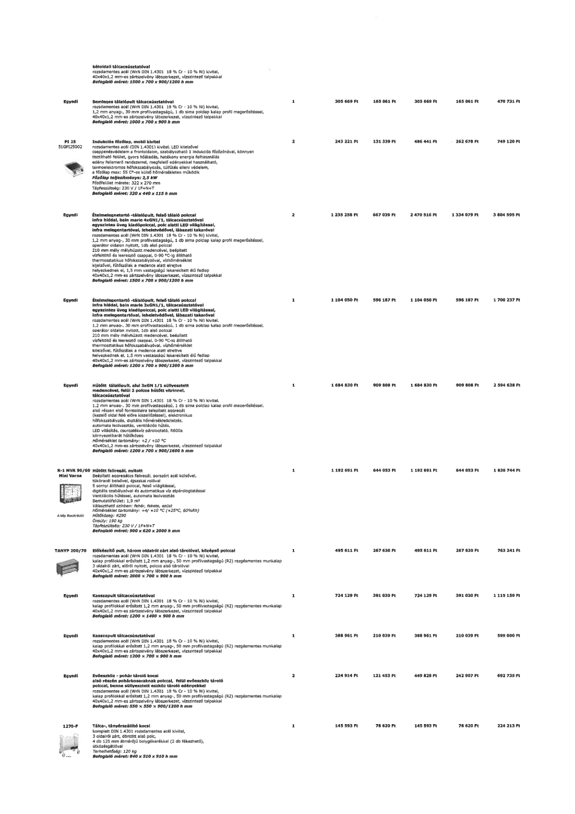

| Tétel | Menny. | Egys. | Anyag e.ár (net HUF) | Díj e.ár (net HUF) | Anyag összesen (net HUF) | Díj összesen (net HUF) | Anyag+Díj összesen (net HUF) |
|---|---|---|---|---|---|---|---|
| Egyedi Semleges tálalópult tálcacúszótatával | 1 | NaN | 305 669 | 165 061 | 305 669 | 165 061 | 470 731 |
| PI 25 51GP125002 Indukciós főzőlap, mobil kivitel | 2 | NaN | 243 221 | 131 339 | 486 441 | 262 678 | 749 120 |
| Egyedi Ételmelegentartó -tálalópult, felső tálaló polccal | 2 | NaN | 1 235 258 | 667 039 | 2 470 516 | 1 334 079 | 3 804 595 |
| Egyedi Ételmelegentartó -tálalópult, felső tálaló polccal | 1 | NaN | 1 104 050 | 596 187 | 1 104 050 | 596 187 | 1 700 237 |
| Egyedi Hűtött tálalópult, alul 3xGN 1/1 süllyesztett medencével, felül 2 polcos hűtött vitrinnel, tálcacúszótatával | 1 | NaN | 1 684 830 | 909 808 | 1 684 830 | 909 808 | 2 594 638 |
| R-1 MVR 90/60 Mini Varna Hűtött faliregál, nyitott | 1 | NaN | 1 192 691 | 644 053 | 1 192 691 | 644 053 | 1 836 744 |
| TANYP 200/70 Előkészítő pult, három oldalról zárt alsó tárolóval, középső polccal | 1 | NaN | 495 611 | 267 630 | 495 611 | 267 630 | 763 241 |
| Egyedi Kasszapult tálcacúszótatával | 1 | NaN | 724 129 | 391 030 | 724 129 | 391 030 | 1 115 159 |
| Egyedi Kasszapult tálcacúszótatával | 1 | NaN | 388 961 | 210 039 | 388 961 | 210 039 | 599 000 |
| Egyedi Evőeszköz - pohár tároló kocsi | 2 | NaN | 224 914 | 121 453 | 449 828 | 242 907 | 692 735 |
| 1270-F Tálca-, tányérszállító kocsi | 1 | NaN | 145 593 | 78 620 | 145 593 | 78 620 | 224 213 |
